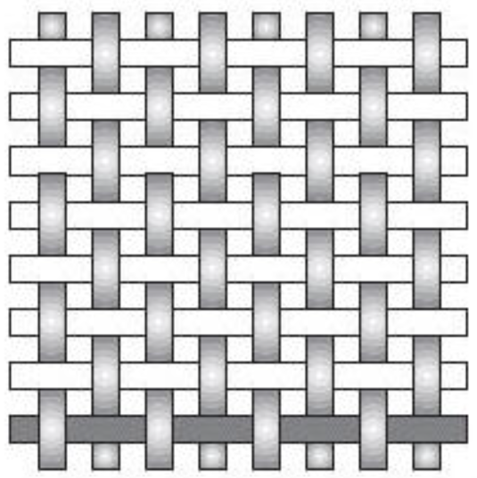
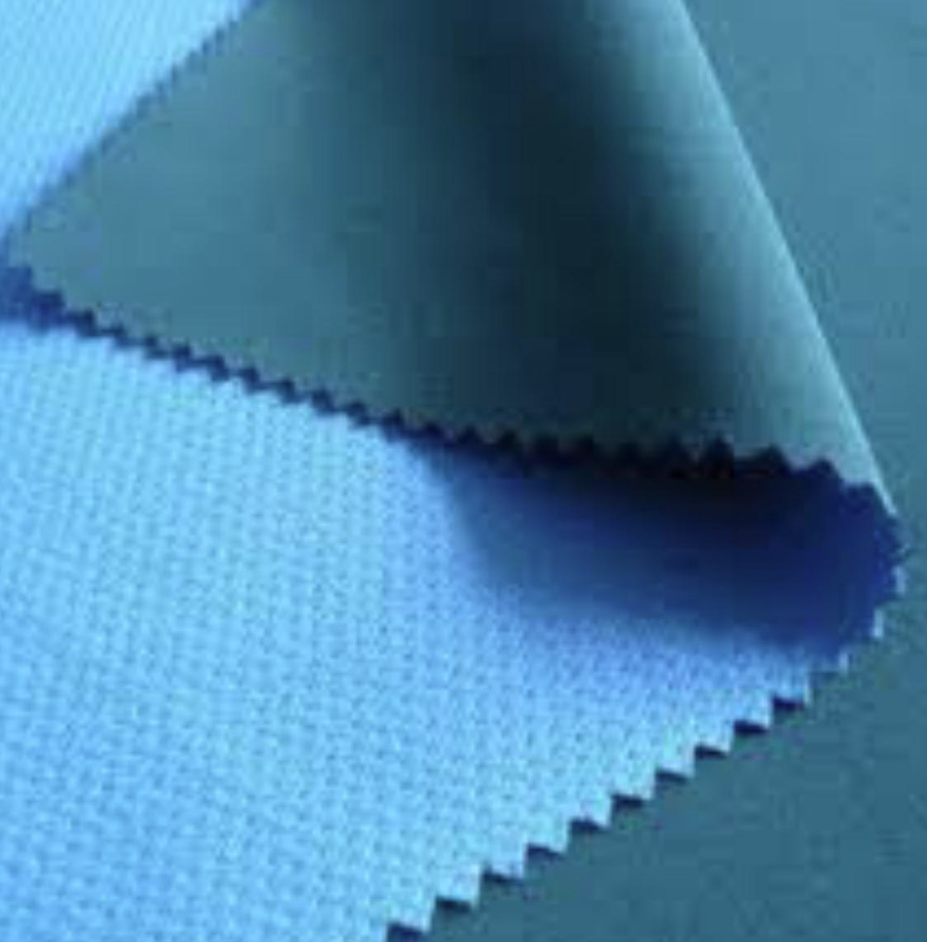
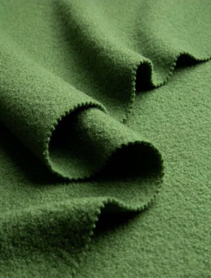
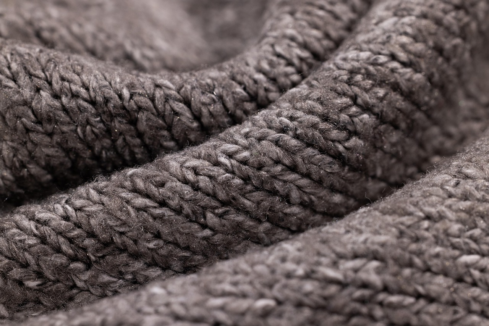

The following page of notes will cover:
- Natural fibres
- Synthetic fibres
- Blended and mixed fibres
- Woven textiles
- Non-woven textiles
- Knitted textiles
Using these general rules will help you answer most questions relating to Natural and Manmade fibres:
- Natural fibres tend to be environmentally friendly as they are made from animals, plants and insects
- Natural fibres are biodegradeable
- Synthetic fibres can be made in any length or thickness
- Symthetic fibres are made from coal and oil making them non-renewable and harmful for the environment
Cotton:
- Hard wearing
- Easy to upkeep
- Versatile
- Breathable
|
- Creases easily
- Absorbent (long dry time)
- Highly flammable
|
Uses: Curtains, cushions, clothing, knitting yarns
Wool:
- Warm
- Lightweight
- Crease resistant
- Dyes well
- Recyclable
|
- Shrinks with heat/moisture
- Needs special treatment (dry cleaning)
- Weakens when wet
|
Uses: Tea towels, bed sheets, table cloth, clothes
Silk:
- Luxurious feel and appearance
- Exceptionally strong (strongest natural fiber)
- Breathable and temperature regulating
- Hypoallergenic
- Excellent drape and luster
|
- Expensive
- Requires delicate care (often dry clean only)
- Weakens when wet
- Prone to water spots
- Susceptible to sunlight damage
|
Uses: Luxury clothing, Ties, Scarves, Underwear, Bedding, Medical sutures
Polyester fibres:
- Strong
- Flexible
- Dries quickly
- Cheap
- Easy to dye
|
- Not very breathable
- Temperature sensitive
- Subject to dye migration
|
Uses: Conveyor belts, safety belts, car tire reinforcement
Polyamide (Nylon):
- Tough
- Strong
- High temperature resistance
- Good solvent resistance
|
- Shrinks easily
- Prone to UV degradation
- Moisture leads to weakness of material
|
Uses: Clothing, cookware, plastic components
Elastane (Lycra/Spandex):
- Exceptional elasticity (can stretch 500-700% of its length)
- Lightweight and comfortable
- Stronger and more durable than rubber
- Resistant to body oils, perspiration and detergents
- Retains shape well after stretching
|
- Not breathable (can trap heat)
- Degrades when exposed to chlorine
- Can lose elasticity over time
- Vulnerable to heat damage (melts at high temperatures)
- Not biodegradable
|
Uses: Sportswear, Swimwear, Underwear, Compression garments, Dancewear, Medical compression stockings
Cotton/Polyester Blend:
- Combines breathability (cotton) with durability (polyester)
- Wrinkle-resistant and retains shape better than pure cotton
- More affordable than 100% natural fabrics
- Dries faster than pure cotton
- Stronger and more tear-resistant than cotton alone
|
- Less breathable than 100% cotton
- Can retain odors more than natural fibers
- Prone to static cling
- Not as soft as pure cotton
- Environmental concerns (polyester is petroleum-based)
|
Uses: T-shirts, Work uniforms, Bed linens, Casual wear, Sportswear, Upholstery fabrics
Created by interlacing warp (vertical) and weft (horizontal) yarns at right angles
-
Plain Weave: Simplest weave pattern (over-under alternation).

Fabrics made by bonding fibers together without weaving or knitting
-
Bonded Fabrics: Fibers adhered with heat/chemicals (e.g., interfacing).

-
Felted Fabrics: Compressed wool fibers matted together.

Constructed by interlocking loops of yarn
-
Knitted Fabrics: Stretchy, looped structure (e.g., jerseys).

Topic test: